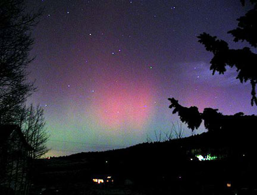

|  |
SJAA member Bob Garfinkle reports a reddish glow to the northwestern sky, from his home in Union City. Though this note is rather late in the evening, it's entirely possible that we'll be treated to a repeat on Wednesday night. Watch for it!
It's very unusual to see auroral activity this far from the magnetic pole, but it happened last March, that time to the northeast. Watch both directions.
Here at my home near Houge Park, the sky is generally messed up and specifically lighted by a neighbor doing outdoor work, and I see only whitish haze.
Brilliant Jupiter is sitting very near the moon. Pretty!
My nephew writes from his house on the Wisconsin / Minnesota border:
The Aurora here in Wisconsin/Minnesota is absolutely nuts. 9:30 and there is a huge, bright red streak running from the eastern horizon all the way to the city lights of St. Paul (about 30 miles west). The best view seems to the southeast!?! The northeast is mostly moon and incoming planes. Even my dullard-neighbor and his sodium arc yard light can't drown out the show. It almost seems as if the rays are converging to point perfectly overhead.
Joe Fragola wrote:
It's a bit late now, but I can confirm auroral activity from San Jose. Unfortunately I got home from work tonight a bit later than usual, so I didn't see the alerts until around 8:05 p.m. I had participated at an SJAA school star party a couple of weeks ago at Oak Grove Elementary School (E. San Jose).
I remember the sky to the North being away from the main glow of San Jose city lights. So I got in my car for a 25 minute drive from home (S. San Jose, near Houge Park) out to Tully road. I pulled off a dark stretch of road near a house under construction in the foothills. It turned out to be a good decision. The sky from N.N.W. to N.E. had a crimson glow to it ... not too high up (15 - 20 degrees). I watched the show for about 30 minutes. The aurora was more intense toward the N.E. at times.
There were periods of a minute of two where it faded and was hardly noticeable. At other times, the reddened sky was very obvious ... it almost looked like there was a forest fire off in the distance. Very impressive display. I was also fortunate to be at Houge Park for an SJAA star party on March 30 when we saw a previous auroral display. The dominant colors during that display were green and white. The Moon has come up now, so any ongoing auroral activity is probably washed out. I'm hoping for a repeat performance tomorrow night.